| Lesson 1 | ||||||||||||||||||||||||||||||||
|---|---|---|---|---|---|---|---|---|---|---|---|---|---|---|---|---|---|---|---|---|---|---|---|---|---|---|---|---|---|---|---|---|
| 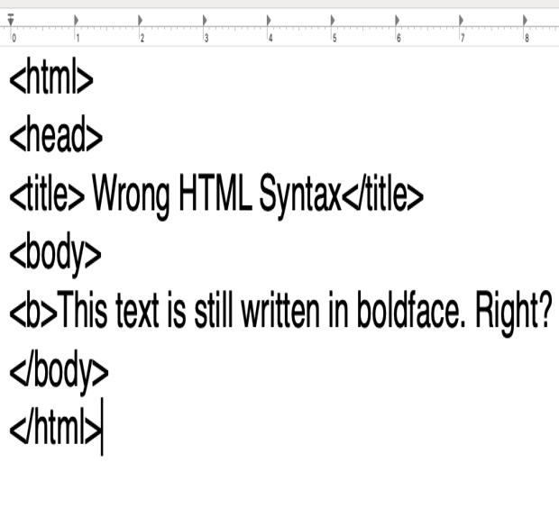 | ||||||||||||||||||||||||||||||||
| XHTML is stricter and cleaner version of HTML. Aimed to replace HTML. All new Web browsers support XHTML, because there came to a point that a huge amount of web pages have been written in the wrong syntax. Since web browsers still force to interpret HTML the way they could, sometimes the wrong syntax could still display a logically correct output. |
||||||||||||||||||||||||||||||||
| Lesson 2 | ||||||||||||||||||||||||||||||||
| 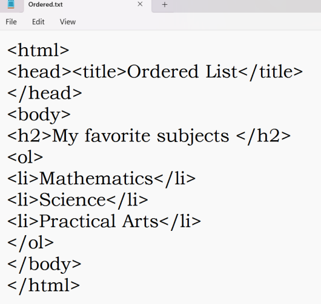 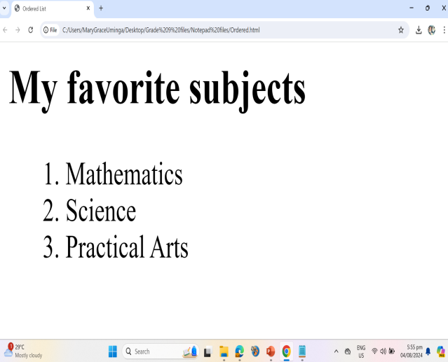 | ||||||||||||||||||||||||||||||||
| HTML Lists
HTML Lists are used to specify lists of
information. All lists may contain one or
more list elements. There are three
different types of HTML lists: 1. Ordered List or Numbered List (ol) 2. Unordered List or Bulleted List (ul) 3. Description List or Definition List or Glossary List (dl) Lesson 3 | 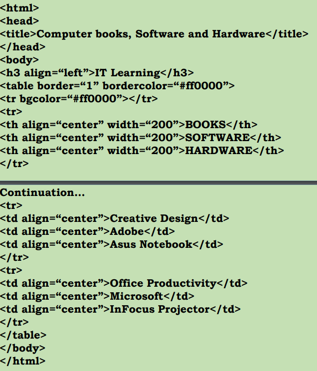 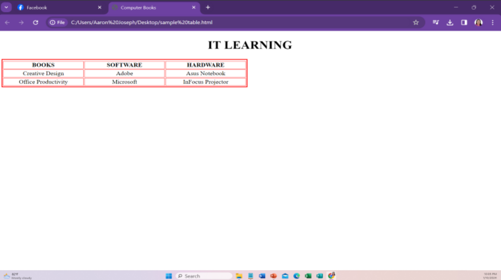 |
Tables allow you to
organize and arrange
data into columns and
rows. | • Tables also allow you to divide your page into section where you can place headers, footers and navigation links. Almost all websites are laid out using tables. Lesson 4 | 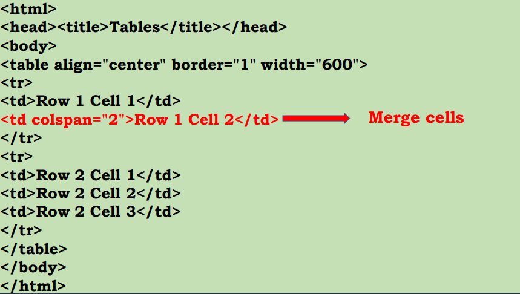 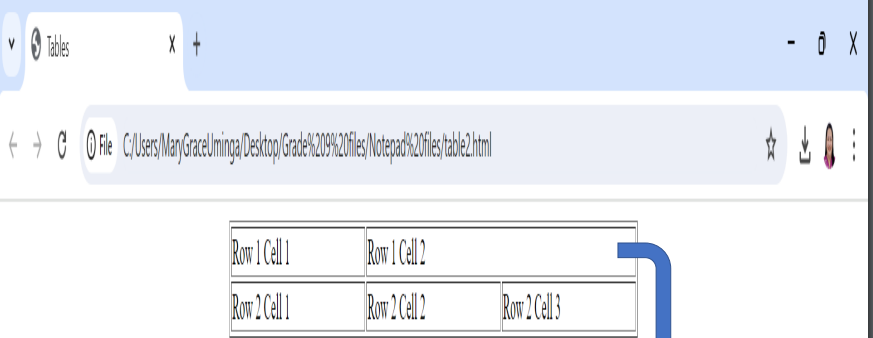 |
Merging Cells
Horizontally in the same row can
be merged using the
colspan attribute of
td, /td, th and /th. | Merging Cells Vertically in the adjacent row can also be merged using the rowspan attribute. Lesson 5 | 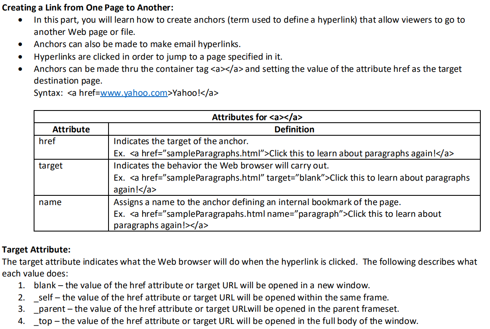 |
 What is a Hyperlink? | • A website is usually made up of several web pages. We can create web pages that are connected to one another and effectively create a Web Site. • Hyperlink is a reference link that allows you to navigate to another page of the same document or to another document. There are three types of Hyperlinks: 1. Absolute URL – links to a page on a different Web server 2. Relative URL – links to a page on the same Web server 3. Named anchor – links to a different location on the same Web page. Lesson 6 | 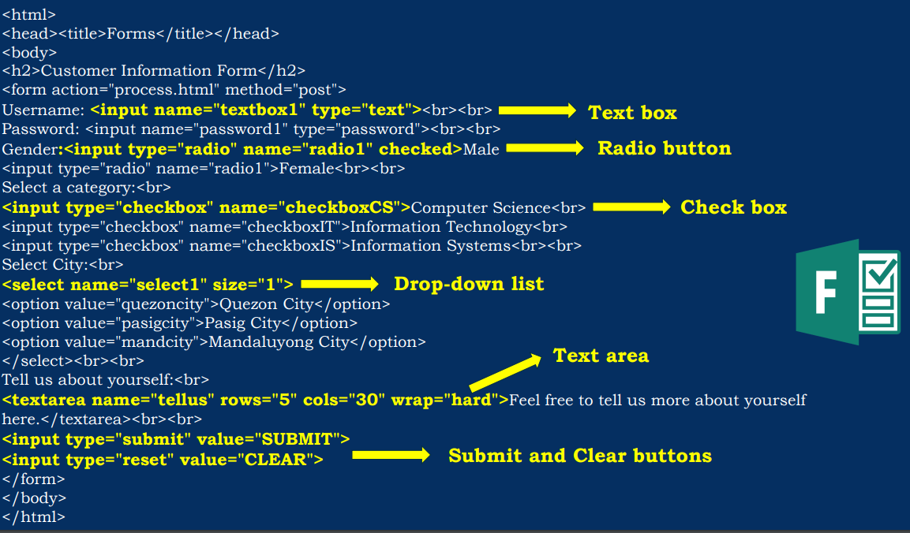 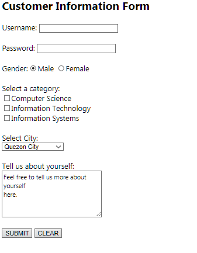 |
What is a Form? | ▪ Form allows you to gather feedback from your readers or visitors and work on the data to provide better service. ▪ Online forms are webpages purposely designed for gathering information on the Internet. These HTML documents are sent back to the server once the user submits them. ▪ The areas on the form are called fields, text fields or text boxes. The form also contains command buttons such as Send or Reset buttons. You can also see standard controls such as check buttons or radio buttons and list boxes. ▪ To create a form, the container tag form and /form must be used. Forms has two (2) attributes: 1. action 2. method Action attribute – is responsible for indicating where the information will be passed whether it is to another Web page or to a script. Method attribute – is responsible for indicating the way for sending the information. The get method of sending information appends the data into the URL. More specifically, the get method is just basically for retrieving data whereas the post method may update or store data. Note: Using forms leads to effective communication between the user and the webmaster. Lesson 7 | 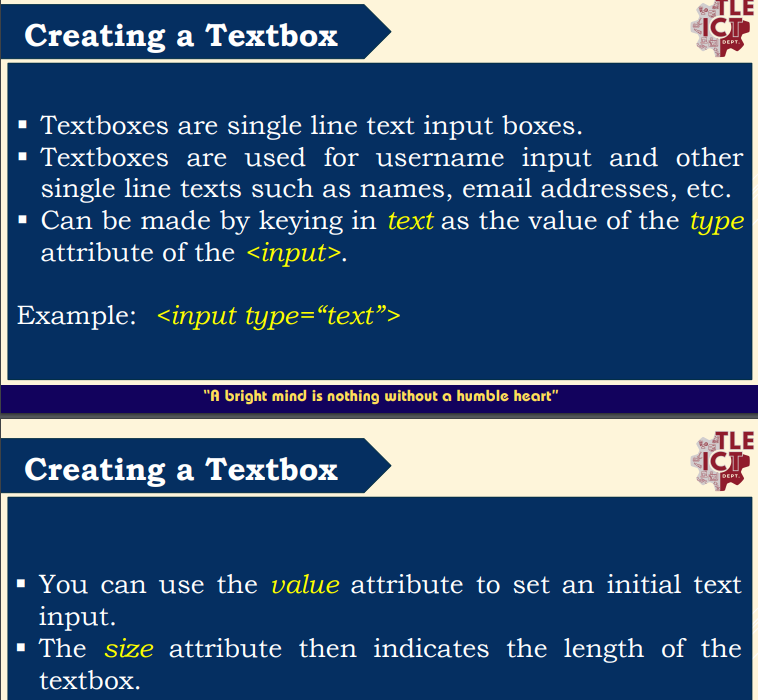 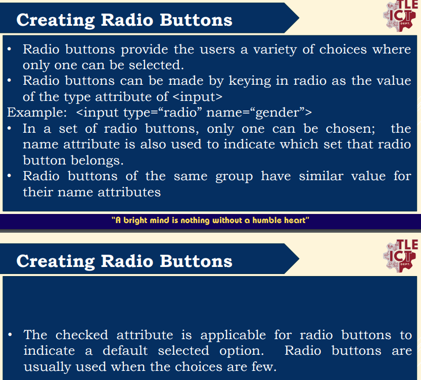 |
Lesson 8 | 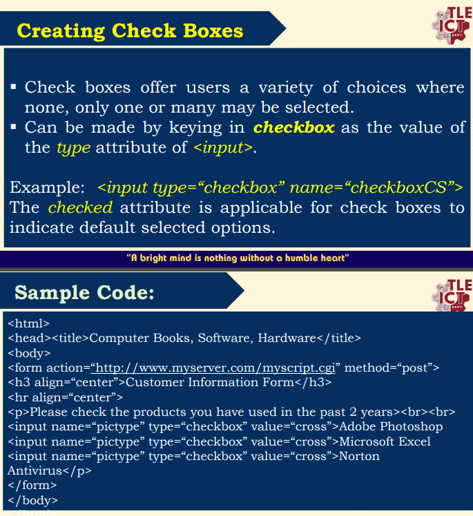 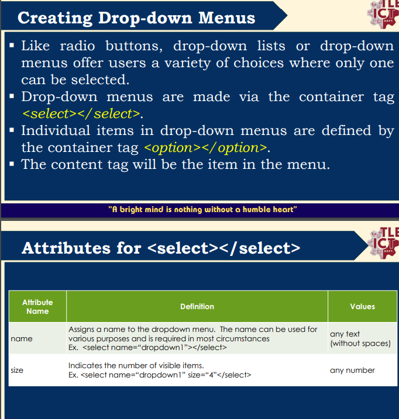 |
Lesson 9 | What is CSS? |
• CSS stands for Cascading Style Sheets • CSS describes how HTML elements are to be displayed on screen, paper, or in other media • CSS saves a lot of work. It can control the layout of multiple web pages all at once • External stylesheets are stored in CSS files. • CSS is the language we use to style a Web page. | ||||||||||||||